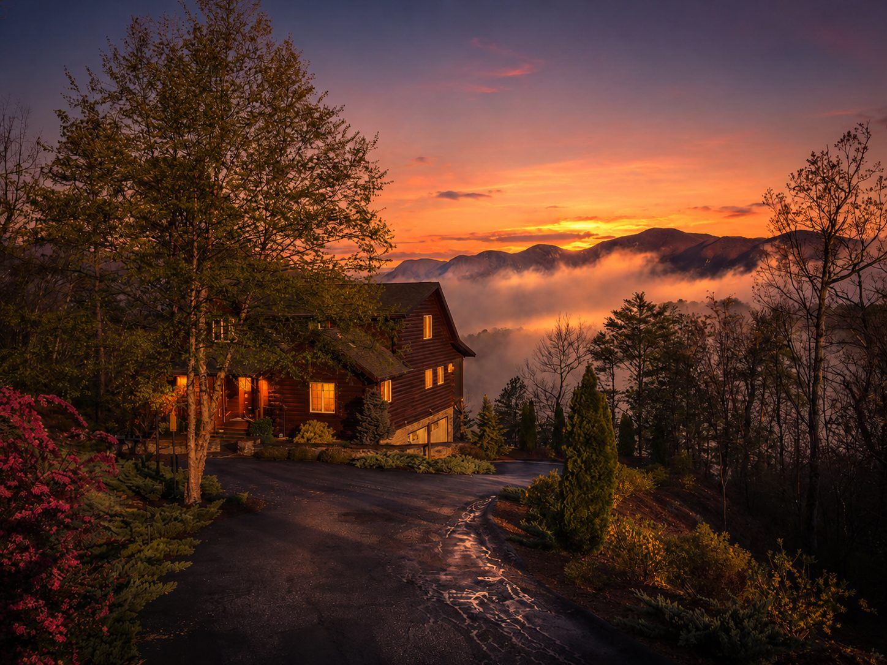
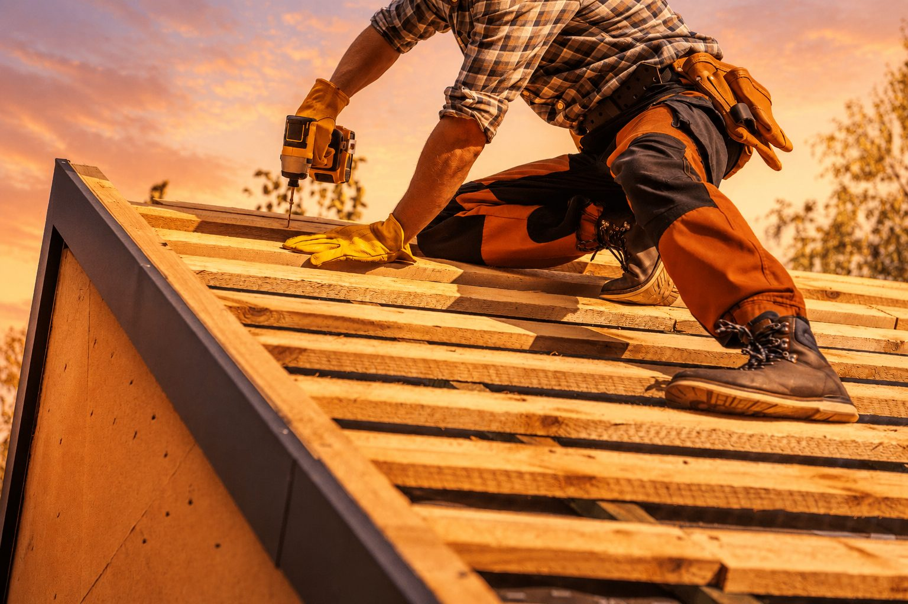
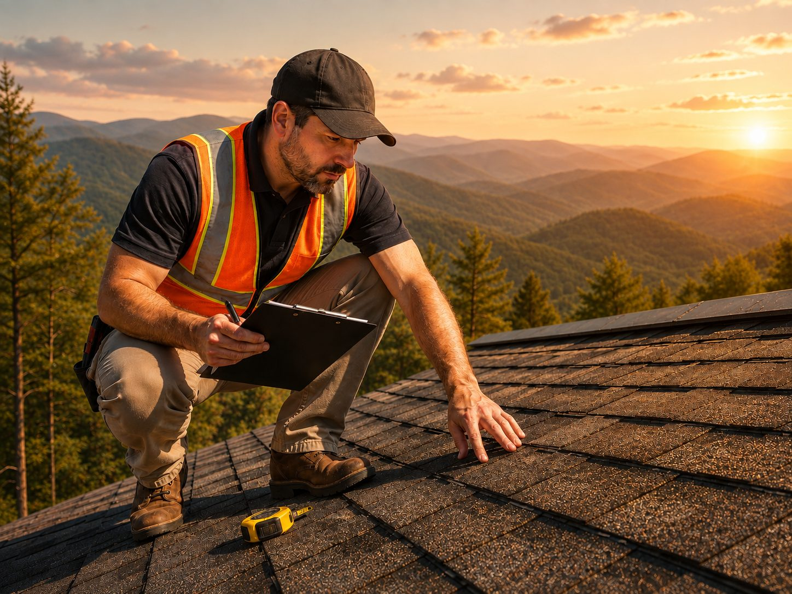

Roofing for Kenilworth Homes
Get a roof concern checked in Kenilworth. Get a Free Estimate
Kenilworth's established homes, wooded lots, and varied roof designs can create plenty of opportunities for water to find weak points over time. Valleys, chimneys, dormers, walls, vents, and previous additions deserve particular attention when a leak develops.
Arden Roofing provides repair, installation, and replacement in Kenilworth. We inspect the problem area and the larger roofing system, then explain whether a targeted repair appears reasonable or whether the roof is showing enough age to consider replacement.
Older homes can have roofing details that have been modified more than once. Taking time to understand how those areas fit together can be important before repair work begins.
Call (828) 305-4838 to discuss a roofing concern in Kenilworth.

We are comfortable working around complex rooflines and previous modifications.
We pay close attention to transitions and likely water entry points.
We can address a contained failure or replace a roof that is broadly worn.
We consider trees, landscaping, access, and neighboring homes during roofing work.
For roofing service in Kenilworth, call (828) 305-4838 or request an estimate.
Free — no obligations
